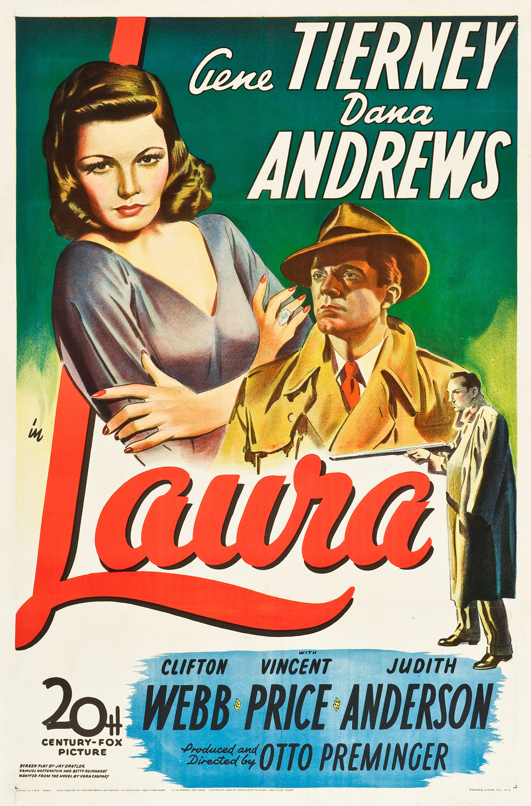

Laura
17th Academy Awards
(Oscars 1945)
5 Nominations, 1 Award
| Nominations | ||
|---|---|---|
| Category | Nominees | Result |
| Actor in a Supporting Role | Clifton Webb | Nominated |
| Directing | Otto Preminger | Nominated |
| Writing (Screenplay) | Betty Reinhardt, Jay Dratler, and Samuel Hoffenstein | Nominated |
| Cinematography (Black-and-White) | Joseph LaShelle | Won |
| Art Direction (Black-and-White) | Leland Fuller, Lyle Wheeler, and Thomas Little | Nominated |